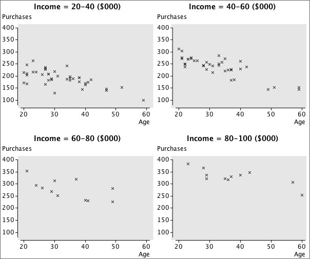

Slicing a scatterplot using a third variable
Slicing is a dynamic technique that only displays a subset of the individuals, based on a restricted range of values for one particular variable. For example, we might display a scatterplot of Y against X, but only for individuals whose values of Z are between 20 and 30. The subset can be dynamically changed with a slider or other control to show whether the relationship between X and Y is different for individuals with low Z and high Z.
Trellis plot
Slicing is a dynamic method and must therefore be performed on a computer. Although less effective, an alternative is to show a series of static plots for different slices of the data. This is called a trellis plot.
